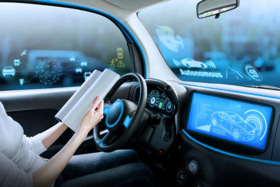

Blockchain
Blockchain is far more than just the technology underlying Bitcoin, the cryptocurrency.
It is a tool that promises to decentralize the structures governing all economic transactions and,
in the process, redefine our concept of trust.
This is the most revolutionary and innovative aspect of blockchain.
Click here for more information.

Autonomous Things
In recent years, we have seen robots, drones, cars, appliances and other types of autonomous things
perform tasks that would normally be performed by humans.
we expect a shift from stand-alone intelligent things to a swarm of collaborative
intelligent things, with multiple devices working together, either independently of people or with human input.
Here are some examples of how autonomous things are being used:
- Intel’s use of a drone swarm for the opening ceremony of the Winter Olympic Games in 2018.
- A plan for Dubai to use autonomous police vehicles that can deploy their own drones for surveillance.
Click here for more information.

Immersive Experience
Training, learning, and exploring in three dimensions.
Immersive experience can create digital environments for humans to experience the impossible.
Through a mix of data science, artificial intelligence, and creativity, virtual and
augmented reality offers the opportunity to train and plan in a safe environment, without consequences.
From battlefield simulations to hospital management scenarios, this technology better prepares teams for mission success.
Click here for more information.